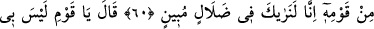
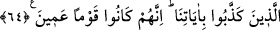

NUH ALEYHİSSELÂM VE KAVMİ
59. Andolsun ki Nuh’u elçi olarak kavmine gönderdik. Dedi ki: Ey kavmim!
Allah’a kulluk edin, sizin ondan başka tanrınız yoktur. Doğrusu ben, üstünüze
gelecek büyük bir günün azabından korkuyorum.
60. Kavminden ileri gelenler dediler ki: Biz seni gerçekten apaçık bir sapıklık
içinde görüyoruz!
61. Dedi ki: “Ey kavmim! Bende herhangi bir sapıklık yoktur; fakat ben,
âlemlerin Rabbi tarafından gönderilmiş bir elçiyim.
62. Size Rabbimin vahyettiklerini duyuruyorum, size öğüt veriyorum ve ben sizin
bilmediklerinizi Allah’tan (gelen vahiy ile) biliyorum.
63. (Allah’ın azabından) sakınıp da rahmete nâil olmanız ümidiyle, içinizden sizi
uyaracak bir adam vasıtasıyla size bir zikir (kitap) gelmesine şaştınız mı?”
64. Onu yalanladılar, biz de onu ve onunla beraber gemide bulunanları kurtardık,
ayetlerimizi yalanlayanları da suda boğduk! Çünkü onlar kör bir kavim idiler.
“Andolsun Nûh’u kavmine gönderdik.” Nuh (a.s.)’ın nesebi şöyledir: Nuh b. Lemek
b. Metuşelah b. Hanok -ki İdris (a.s.)’dır- b. Yeret b. Mahalalel b. Kenan b. Enoş b. Şit
b. Âdem (a.s.). Şit ve İdris (a.s.)’dan sonra ilk peygamber, Nûh (a.s.) dır. Nuh (a.s.),
marangozdu. Kırk yaşına gelince Allah Teâlâ onu, kavmine peygamber olarak gönderdi.
Nûh (a.s.), 1240 sene yaşadı.
Farsça tefsirde şöyle denilmektedir: “kavmine” ki onun kavmi Kabil’in çocuklarının
çoğundan meydana geliyordu ve puta tapıyorlardı.”
Kabil, kardeşi Habil’i öldürünce Âdem (a.s.) onu uzaklaştırdı. O da çocukları ve
kendisine tâbî olanlarla Yemen’e yerleşti. İlk olarak puta tapan da odur.
Nuh “dedi ki: “Ey kavmim,” yalnız “Allah’a kulluk edin,” O’na ortak koşarak